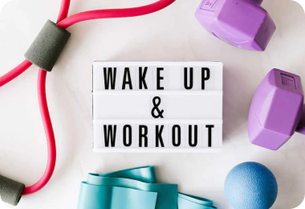
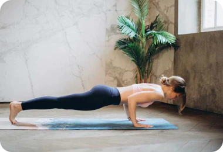
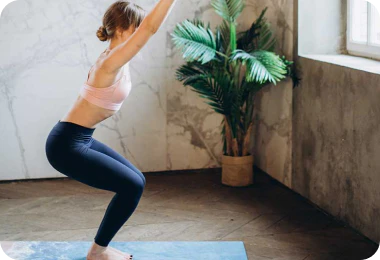
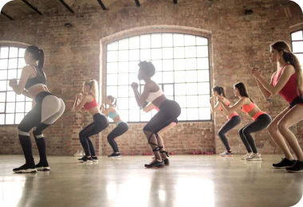

HEALTH NEWS
知識就是力量
來看看，怎麼動怎麼瘦
來看看，怎麼動怎麼瘦
- 
- 運動那麼好，我們一起努力堅持好嗎?
- 辦了健身房的會員卡，結果因為天氣、工作、身體等原因，會員卡都停滯半年了，在FB曬跑步記錄，打了兩天卡就再也沒有了動靜，一時心血下載了運動APP，點進去規劃了運動計畫後就擱置一旁，“運動一天不難，難的是把它變成一種生活習慣”
- 
- 一招棒式有效鍛鍊核心肌肉，改善駝背、練出馬甲線
- 核心肌群是所有運動的基礎，核心肌群強壯的話，可以增加身體的活動性及穩定性，對抗運動所產生的壓力及外界張力。且日常的活動也需要核心的參與。因為當人體的四肢進行任何移動時，核心肌群會先收縮，來穩定脊椎保護脊椎避免受傷。棒式是被認為訓練核心肌群的最佳動作之一，而且不只可訓練到核心肌群，連肩膀、胸部、背部、腿部的肌肉都會參與到，是個相當全面性的動作。但棒式可不是將身體撐起來就有效喔！如果姿勢不對，反而會傷到脊椎和腰。
- 
- 深蹲救台灣：一定要做深蹲的七個理由
- 健身能做的動作不少，為什麼深蹲特別重要？因為深蹲相較於其他動作，有更多的不可取代性： 深蹲是健康生活型態裡出現率最高的自然動作之一。數數看，你一天總共需要做幾次彎曲又伸直膝蓋的動作？人類是直立的動物，一輩子都在學習怎麼樣優雅地抵抗地心引力，深蹲正好能讓你完美具備這項能力。

- 「縮小腹」就是瘦肚子最好的方法
- 上班族每天坐辦公室，唯一的運動就是從家裡通勤到公司上班，接著就一直坐在電腦前處理公事，少有機會真正的運動。除了缺乏運動外，飲食也不均衡，經常沒時間吃早餐，午餐吃微波食品，晚餐吃鹽酥雞、熱炒等多鹽多油的食物，配上一杯啤酒或冰奶茶。這樣的飲食習慣，一但過了25歲，某天你會突然發現「牛仔褲扣不起來了」，才會驚覺「糟糕 ！肚子真的愈來愈大了！」

- 什麼是低GI、低鈉、碳水化合物食物？
運動前後懂吃的你需要知道的事? - 常聽人家說運動前後吃的食物要注意吃低GI、碳水化合物少量以及富有高蛋白質成分等等，那到底對我們身體來說有什麼影響呢？其實吃對食物就等於是幫運動鋪好路，讓運動後的功效更加倍！那就讓我們先花個時間了解一下上面所說的名詞吧！

- 空中瑜珈：一條布打造最美打卡POSE
- 做空中瑜珈和以往的一般傳統瑜珈有些不同，是不少女生都想挑戰的運動，因為它和其他運動相比起來比較沒有那麼劇烈。它是藉助從天花板上吊下來的絲質吊床，讓練習者完成所有的動作。此外，空中瑜伽不但優美，對身體也有很多好處。學習空中瑜珈能夠有效的幫助減壓還能雕塑身體的線條，達到瘦身的效果喔！
- ８種食物幫助你更有效雕塑體型、助長肌肉
- 「為什麼我重訓、 TABATA 、核心都做過了，肌肉還是不明顯？」可能是缺少某些飲食的關係喔！只有運動卻沒有搭配適當飲食的話，可是會事倍功半的！趕快一起來看看哪些食物可以幫助肌肉快點長大吧！
- 
- 多運動不只降三高、抗發炎！研究：有氧運動有效調節情緒減輕憂鬱、焦慮
- 近年來運動風潮盛行，不管是健身、慢跑、瑜珈越來越普及，加上不管哪一科臨床醫師也都鼓勵患者要多運動，除了可以改善整個身體機能外，運動也可以改善情緒。但你知道哪像運動最能改善心情嗎？